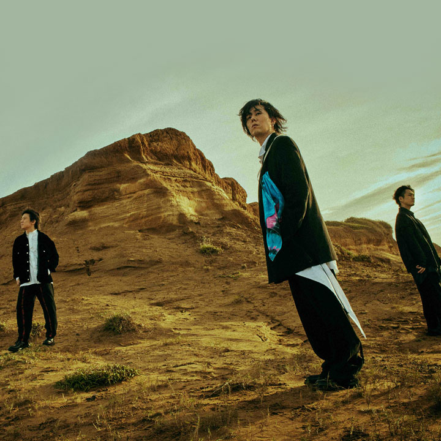
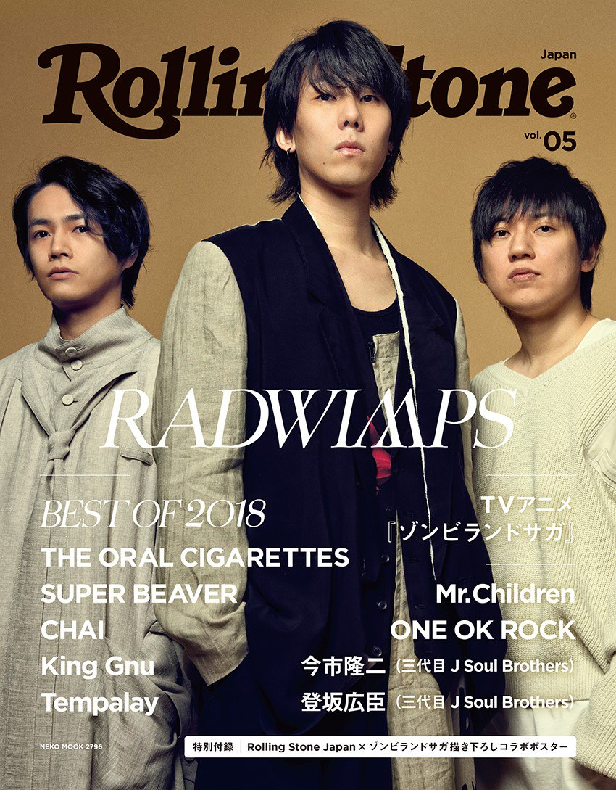

RADWIMPS
源自日本的RADWIMPS樂團以卓越的音樂實力和深刻的歌詞風靡全球，成為樂壇的耀眼之星。 透過獨特的音樂風格和令人難忘的演出，他們深植於樂迷心中。 音樂風格豐富多元，融合了搖滾、流行和電子等元素，打破了音樂的框架，挑戰了傳統的定義。這種多元的音樂元素讓他們的作品充滿實驗性，每一首歌都是一場音樂的冒險，引領聽眾探索音樂的無限可能。 歌詞不僅專注於生活琐事，更深入探討了青春、愛情和人生等深層次的主題。歌詞筆下的情感，如同一面鏡子，讓人們看見自己的影子。這種深情厚意的歌詞，使得他們的音樂超越了單純的娛樂，成為樂迷心靈深處的共鳴之音。 對「生命」持徹底的肯定態度，但卻同時反對永生，這兩種態度在他們的很多曲子裡面經常對照出現，成為RADWIMPS音樂中的一大特色。 音樂不僅屬於日本，更是走向了世界。作品經常被選用為電影和動畫的原聲帶，使得他們的音樂穿越語言和文化的隔閡，觸及了全球各地的聽眾。樂迷們用音樂的語言共同譜寫了一部屬於RADWIMPS的國際音樂史。 演唱會更是一場視聽盛宴。無論是音樂的呈現還是與樂迷的互動，每一場演出都是一場無法忘懷的音樂饗宴。他們將音樂和表演完美結合，打造出一個屬於RADWIMPS獨有的奇妙世界。 RADWIMPS以其音樂的融匯創新、歌詞的深情表達和演出的感染力，贏得了全球樂迷的愛戴。他們不僅是音樂的創作者，更是情感的傳遞者。未來，隨著音樂的不斷發展，相信RADWIMPS將持續為樂迷呈現更多令人驚艷的音樂之旅。

專輯
RADWIMPS-2003年7月2日
RADWIMPS 2 〜発展途上〜-2005年3月8日
RADWIMPS 3〜無人島に持っていき忘れた一枚〜-2006年2月15日
RADWIMPS 4〜おかずのごはん〜-2006年12月6日
DVD-RADWIMPS4.5-2007年2月7日
DVD-生春巻き-2007年7月11日
アルトコロニーの定理-2009年3月11日
絕體絕命-2011年3月9日
DVD-絶體延命-2012年1月11日
×と○と罪と-2013年12月11日
DVD-RADWIMPS LIVE&DOCUMENT 2014 ×と○と君と-2014年12月3日
DVD-青とメメメ-2015年9月16日
原聲帶-你的名字-2016年8月24日
人間開花-2016年11月23日
DVD-Human Bloom Tour 2017-2017年10月18日
ANTI ANTI GENERATION-2018年12月12日
DVD-Road to Catharsis Tour 2018-2018年12月12日
DVD-Anti Anti Generation Tour 2019-2020年03月18日
原聲帶-天氣之子-2019年7月19日
原聲帶-天氣之子 complete version-2019年11月27日
DVD-FOREVER IN THE DAZE TOUR 2021-2022-2021年04月19日
FOREVER DAZE-2021年11月23日
概念專輯-2+0+2+1+3+1+1= 10 years 10 songs-2021年3月11日
原聲帶-余命10年 〜Original Soundtrack〜-2022年5月3日
原聲帶-鈴芽之旅-2022年11月11日